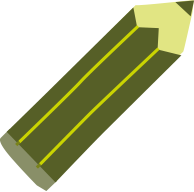
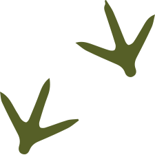
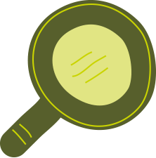
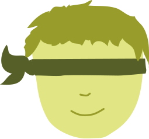
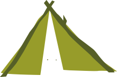

How long do you have?
No Time
-
DRAWING
Take a paper & pencil. Get outside, pick up or find some wild stuff, dirt, leaves, twigs, plants and draw, non-stop for 10 minutes. No stopping or talking, just drawing.
-
BIRD PLAY
Birds are everywhere. Can you see some right now? Observe the birds and imitate their movements. How do different birds move?
-
FOX WALK
Foxes are wily, stealthy animals. Put one foot quietly in front of the other and walk like a fox. How close can you get to a squirrel or bird?
-
COLOUR COUNTING
Walk out your front door. How many different colours can you count? Write them down. Who can see the most? What is the most unusual colour?
-
SPIDER WEB SPY
You can play this game in the garden, in the woods or even your house. How many different spider webs can you find? What makes each one different? Try to draw your own web.
-
CLOUD SPOTTING
Head outside, lie down and look at the clouds. What shapes can you see? Are there any that look like something else? Can you count all the clouds in the sky?
-
ANT DETECTIVE
If you find a trail of ants and follow it forwards and backwards. Where have they been and where are they going? Watch how they follow their path. What do you think they looking for? Can you find their home?
-
GRASS WHISTLE
A grass whistle is quick to make and fun to blow. All you need is a good blade of grass. Choose carefully and get whistling! Put your thumbs together, and hold the blade of grass between them, gripping the grass with the top and bottom of your thumbs. Blow into the crack between your thumbs, so the air flows over the grass. You should hear a whistling sound. If you don't hear anything, move the blade of grass a little, and try again. Try making the grass tight or loose, try different blades of grass Experiment and you'll soon get the hang of it.
-
WALK LIKE THE ANIMALS
Can you walk like an animal? Find a good place outside to practice with friends. Think about how different animals walk, can you see any that you can imitate? How about trying to walk like a crab (on all fours and sideways) or a hopping frog? When you have had a chance to practice you can hold an animal walk race!
-
BIRD TALK
Take 10 mins to be still and listen to the chorus of birds right outside your house. How many different bird songs can you hear? Try to imitate them. What bird do you think makes that call? What do you think the birds are saying? Can you talk to the birds?
You can hear british bird calls on the
BBC R4 website -
TREE HUGS
Take 10 minutes to feel a tree. Every tree species is unique and different, some are rough with distinct patterns while others are smooth like paper. Try this with a friend – it makes it more fun. Choose two different trees close to each other, close your eyes and use your hands to explore the bark and leaves. What can you find out about the tree? What does it feel like? Is it warm or cool? Describe the tree to your friend in as much detail as you can.
-
GUESS THE ANIMAL NOISE
Animals make crazy noises. How many different animal noises can you think of? Try to make an animal noise, see if your friends can guess what you are.
-
CALL AN OWL
Owls come out at night, so wait until its dark before trying this activity. All you need are two hands, an owl impression and something to sit on. Try it in your back garden. This video from the National Trust will show you how.
-
BIRDSTEP
Spot a bird, they're everywhere if you stop and look and listen. How close can you get to that bird? Be silent, statue-like, stealthy and move super-slow. Can you talk to it through your inner wild thing?
Can you snap it, identify it, share it?
-
BIRD DINNER PARTY
Set out seeds for birds in the winter and watch to see who comes. How many different types of bird come to the party? Try to draw or snap them. Share them with your friends.
You can identify British birds on the
RSPB website. -
SMELL COLLECTING
Head out for a short walk somewhere near your house and collect the smells you come across. Can you catch a smell? Pick up things (like pond water, earth, a flower, a leaf) to put in jars. Close your eyes. Can you tell which you are smelling?
-
LEAF SNAP
Collect a bunch of different fallen leaves in a bag. Then empty out the bag and try to match the leaves with ones from the same tree. How many different types of leaf can you find? You can identify them here:
-
BEE STALK
When you spot a bee visiting a flower, wait and then follow where it goes. Be careful to watch where you are going because a bee can reach places more easily than you can.
-
SHADOW WATCHING
This is good for a sunny day. Head outside into an area with plants and trees. Look at the shadows on the floor, and you will see all sorts of magical pictures. You may find a shadow beast, a giant's stairway and much more. Use your hands, cones, grasses and other things to create shadow pictures on the ground.
Have a game of shadow tag. And try to avoid your shadow being trodden on.
-
STOP AND LISTEN
Find a quiet place to sit and listen. Even on a still day you will be able to hear the song of Nature. Each day it is new and different. What can you hear? Chirping grasshoppers? Breezes in the tree-tops? Buzzing bees, buzzing wasps?
Write down or try to draw what you hear. What do you think the trees, flowers, animals and summer breeze are saying to each other?
-
GIVE ME FIVE
Head outside. All you need is a keen pair or eyes. Pick a category. Try to find 5 different things that fit the category. For example find 5 different types of tree, 5 different animals, 5 different insects, or 5 different flowers. Snap, draw or write down the things you find. Do you know what they are called? If not then when you get home look them so that you know for next time.
-
MICROSCOPIC ANIMAL WALK
For this game you will need a magnifying glass. Head outside, find a fallen tree, patch of grass or turn over a stone. Get down on your hands and knees and focus on the subject with the magnifying glass. Move very slowly, pretend you are a tiny creature, making its way through the habitat. Do things look different at this scale? What do you notice that you don't normally see? Can you draw what you see?
-
ANIMAL CHARADES
This game is best played outside but you can play indoors if its raining. One person pretends to be an animal and the others try to guess who they are. There are many things you can do to give them hints: make creature sounds, walk or run like the animal, act brave or timid, noisy or quiet depending on what you are.
Pretend so well that you become the animal. Give everyone in the group a chance to pretend at least one time, then start again.
-
CAMOUFLAGE EXPERIMENTS
Nature is an expert at camouflage. For example polar bears are white to blend in with the ice and snow. Stick insects are thin and spindly to look like pieces of tree.
Head outside into a park or garden and see if you can find examples of camouflage. Try to imitate nature by camouflaging yourself. How could you dress to camouflage yourself in different places, or at different times of year? Play hide and seek with a friend. See how well you can camouflage yourselves.
-
FUN IN THE RAIN
Next time it is raining don't stay inside, put on a raincoat and wellies and experience a natural shower!
Once you're outside splashing through the rain, sniff the air. What does rain smell like? Look around. See if you can spot any animals or insects that you don't normally see when the sun is out. Look at the trees, how do they handle the rain? Some leaves are made so that the rain glides off them. What else you can discover around your home that looks different in the rain than when the sun is out?
-
OBSERVATION GAME
Head outside with a friend, take a pencil and paper with you. Try to find somewhere with interesting plants, rocks or trees. Find a place to sit and choose a natural item to describe. Write about it for 5 mins. What does it look like? What colour is it? How big is it? What textures does it have? Be careful not to name the item. When you are finished exchange pieces of paper. Can you tell what it was your friend was describing? Choose a different object and start again.
-
DAISY CHAIN
For this summer activity you will need to head somewhere with lots of daisies, a park or lawn. Maybe you have them in your garden?
Pick daisies with short but thick stems, this will make your chain stronger. Healthy fully open ones make the best necklaces.
Make a small incision at the base of the stem with your thumb nail. Be careful not to go all the way to the bottom. The slit should be just a bit longer than the width of the daisy stem.
Thread the stem of another daisy through the slit. Then repeat the process with subsequent daisies. When you think your daisy chain is long enough, thread the stem of the last daisy through a small slit at the top of the first stem.
-
LOOK UNDER A ROCK
Head outside. Can you find a rock to look underneath? When you find one, turn it over carefully. You don't want to harm the things that live under it. What can you see underneath? Are there mini-beasts living there? What patterns can you find in the dirt? Are there slippery slug trails or worm holes?
-
Observe, snap, draw.
Don't forget to replace the rock carefully when you are done. Try different rocks in different places. What different things can you find? Try at different times of day or in different weather. Record the differences you find in the under-rock world.
-
ROLL DOWN A HILL
Find a good slope covered in soft grass. Get rolling! How many different ways can you roll down the hill? On your side? Head over heels? Backwards? Go crazy and organise rolling races!
This is just one of the national trusts 50 things to do before you are 11¾. Watch this video for rolling tips! https://www.youtube.com/watch?v=z0ij4UmAEEg&feature=player_embedded
-
NATURE BRACELET
To make a nature bracelet all you need is masking tape. Wrap the tape around your wrist sticky side out. Then, head out into your garden, street or a park. Look around for natural things to stick to your bracelet. Leaves, flowers and seeds all make great decorations. You could try making a bracelet with one colour, or with many different coloured things. Try to cover every piece of sticky tape with something natural.
-
CLIMB A TREE
Trees make the best climbing frames, if you know how to pick the right one. Go with a friend or parent, they can help you pick a good one and spot footholds. Choose one with sturdy branches you can reach from the ground. Check under the tree for things that can hurt you if you fall, and look out for slippery moss and rotten branches. Remember to keep three of your arms and legs on the tree at all times. Enjoy the view!
You can find more tree climbing tips in this video.
This is just one of the national trusts 50 things to do before you are 11¾ you can find the rest on the 50 Things website
-
NATURE MYSTERY BAG
This is a fun game to play with your friends. You will need a blindfold or cloth bag. Head into the garden or local park and collect a bunch of natural things. What can you find? Try to get things with different shapes, textures and feels. Blindfold your friend, or place the items into the cloth bag. Can you guess what it is just by touch? No peeking!
-
SPY WALK
Take a walk you know well. It could be to school or to the shops. Use your spy skills to seek all the wild things.
Spy it, snap it, note it, sketch it.
-
READ OUT
Don't read in. Read out.
Take your reading books and find a spot in outside to sit and read. Everything is better outside!
-
RAINBOW SEARCH
Take a walk through your neighbourhood, garden or a local park. Try to find something natural that is one of the colours of the rainbow. Then look hard to find something that matches each colour in the rainbow: Red, Orange, Yellow, Green, Blue, Indigo (a purple blue), and Violet.
-
SMELL WALK
Take a short walk and write down all the different things you can smell, such as fresh cut grass, moist soil, flowers, and rain. Can you smell different things at different times of the day? Can you smell different things in different weather conditions or seasons? When do you smell the most things? Can you locate the source of each smell?
-
DANDELION INVISIBLE INK
Go outside and try to find a dandelion. Pick one, make sure you get plenty of stem. Look at the stem – a white liquid or sap will be oozing out. You can use this white sap as invisible ink! Just draw on a piece of paper using the stem sap. At first it will be very difficult to read. Leave it to dry and your picture or message will then be clear to see!
Thanks to the Nature Detectives for this secret. You can find more like it over at Nature Detectives.
-
TREE GIANTS
Every park, street and woodland has a family of tree giants. This tree measuring activity will help you find the king of the trees!
Find a tree that you think is a tree giant, and face away from the tree. Look upside down between your legs and move forwards or backwards until you can see the top of the tree. Count how many steps or paces it is to the tree trunk. This is how tall the tree giant is. Can you find one even taller?
Thanks to the Nature Detectives for this activity. You can find more like it over at Nature Detectives.
-
SNAIL RACES
Stage a snail race! First, carefully collect some snails. Snails are most active at night or in damp conditions. See if you can collect some after a shower of rain. To make a snail racecourse, draw a circle on the ground about 30 cm in diameter with a smaller circle at the centre, or download the printable course below. Before starting the race give each snail a name. Which one do you think will win? Place the snails in the centre of the circle and start the timer. The first one to get out of the circle wins! Who's the champion? In what time did they finish? Reward the snails with a nice juicy lettuce leaf before letting them go!
Try racing different creatures – ladybirds, slugs, woodlice, worms or ants. Which creatures are the best athletes?
This is just one of the national trusts 50 things to do before you are 11¾. Here is a video guide to snail racing.
-
LEAF HUNT
Head to a local park or outside space with a lot of trees. Investigate the leaves on the trees. What shapes are they? What do they feel and smell like? See how many different types of tree you can identify from this downloadable sheet.
You can do this in different places and draw a tree map. Which area has the most different types of tree? Start a leaf collection. See who can collect the most different species.
-
FOREST FLOOR CHALLENGE
Challenge your friends to see how far you can explore a wood or garden without touching the floor.
Choose your starting point carefully. Look out for:
- Tree stumps to tiptoe across.
- Logs to balance on.
- Strong branches to swing from.
- Tree roots to balance on.
- Patches of ground to leap over.
Mark the furthest point you reach without touching the ground and measure it in strides from the starting point. How far can you get?
Read more about the Forest Floor challenge
-
NEST CHALLENGE
Spring is the time for many birds to build a nest, ready for laying their eggs and bringing up their hatched chicks. Can you build a nest that could hold a clutch of eggs and withstand the wind?
Look for materials on the floor that you could use – for example dried grasses, twigs, sticks, and lichen. Now find a low fork in a tree and build your nest.
If you want to give yourself an extra challenge, try using just one hand – the bird only has its beak after all! If there are two of you, you could use one hand each and work together. When you have finished, look for several small stones, cones or other objects that could be your eggs. Place them in your nest. Will it hold them? Then, with your eggs still in the nest, give the branch a little shake to see if your nest would stand up to the wind Take pics of your nest and share with your friends.
-
NATURE PERFUME POT
Head outside, to a nature place with lots of plants. You will need to bring an old container such as a yoghurt pot with you for this activity. Look for things on the floor or in hedges and bushes. Pick them up, crush them or break them between your fingers and smell. Add any smells you like to your pot to make a nature scent. Use a stick to mash them together. Which animals may be attracted to your woodland scent? A bumble bee? A badger? A blackbird?
-
NATURE HUNT
How many of these treasures can you find and collect? Some things may only appear at particular times of year. Which things can be found when?
- A tough or shiny evergreen leaf
- The sound of a nut falling to the ground
- 2 different types of winged seed
- A lobed leaf (like an oak leaf)
- A plump sweet chestnut
- An acorn in its cup
- Fallen pine needles
- A parachute seed
- A shiny conker
- A leaf with teeth
- A pine cone (thick woody scales)
- A fir cone (thinner more flexible scales)
- The sound of the wind in the tree tops (record it or remember it)
- A fallen twig covered in moss or lichen
- A star-shaped leaf
- 0 leaves, each with a different autumn colour or shade
- A prickly sweet chestnut shell, opened to show the furry lining The sound of an animal rustling in the dead leaves or undergrowth
-
NATURE ART
Go on a short walk around a garden or park looking out for different objects on the ground. Look for different colours shapes or textures. Collect the objects and arrange them into a picture or pattern. What can you draw with the things you have found? Take pictures of your art and share with your friends.
-
NATURE ALPHABET
Find an outside place with trees and plants. What things can you find to use to make letters? Big sticks, little sticks, leaves and long grass are all great. Get creative and try to make each letter of the alphabet. Maybe you can create a word or message for people or animals to find. Snap the results and share.
-
BARK RUBBING
Bark rubbings are a simple way to collect interesting patterns. This is an activity for a dry day. You will need a large crayon and some thin paper.
Head outside and find a tree. Pick one that feels good to you. Press a sheet of thin paper up against the tree bark and gently rub the side of the crayon on the paper until the pattern of the bark shows. Try it with different trees, which ones make the best rubbings? Afterwards, can you tell which rubbing is from which tree? Collect your rubbings in a bark book. You could include some facts about the tree.
-
LEAF RUBBING
Leaf rubbings are a simple way to collect interesting patterns. You will need a large crayon, some thin paper and a hard surface.
Head outside and collect a bunch of interesting leaves. Lay them on your hard flat surface and cover them with a thin sheet of paper. Rub the paper with the side of the crayon until an image of the leaf emerges. Try arranging different leaves together to make a pattern or picture. Do you know what trees the leaves came from?
-
EAT WILD BLACKBERRIES
In September hedgerows are full of yummy blackberries. Head out and see if you can find some. You may get scratched by the prickly brambles.
-
Feel the Wild
Walk to a park or some wild space, find a comfortable looking spot and sit or lie down – maybe under a tree.
Put on a blindfold (you could tie socks together, or a tea towel will do). Listen, feel, and smell the wild (not the socks).
-
MOON WALK
On a weekend night take a walk and pay attention to the transition from day to night. Notice the sounds, smells and feelings.
-
FAIRY HOUSE
Find an out-of-the-way place to build a fairy house, such as at the base of a tree or in a corner of the garden. Then search for things to build and furnish the house. Sticks can become fairy brooms, flowers fairy hats, feathers can be fairy fans. Use you imagination to find fairy uses for all the items that you come across. Take a picture of your fairy house and share with your friends.
Thanks to babble.com for this activity you can find more like it here. http://www.babble.com/kid/kids-activities/25-adventures-nature-activities-for-kids-natural-world-2/25-adventures-nature-activities-for-kids-natural-world-2-3/#_slide
-
TREE FRIENDS
Pick a tree in your garden or on your street to make your own. Put a ribbon or something simple around it and declares it to be yours! Name the tree and watch how it changes throughout the year. Draw and photograph the tree to create a special tree book.
-
SQUIRREL ASSAULT COURSE
Gather acorns or other nuts in a basket and leave them out for the squirrels (dried corn-on-the-cob will work). Watch to see if you have any squirrel visitors. Create a fun maze for the squirrels using ropes, water guards, or other deterrents — squirrels are smart, and you'll enjoy watching them navigate the maze.
-
BLINDFOLD TOUR
This is a fun and interesting way to explore the nature around you. With a friend head somewhere safe with some interesting places and plants to explore. Take it in turns to be blindfolded, with the sighted person leading the blindfolded one to different interesting places. The blindfolded friend has to touch, listen or smell, depending on what's there to explore. Get them to describe their experience. See if your friend can tell when they move from the sunny spots to the shade, or from grass to soil. When you have explored the area, see if they can retrace their steps from the things they experienced.
-
BAREFOOT WALK
Collect some cardboard boxes. Fix them together to make a tray big enough to walk in or place smaller boxes close together like stepping stones. Collect as many different natural textures from your garden or the park as you can find. Try leaves, twigs, soil & grass. Fill up your boxes with your finds. Put something different in each box to make them unique.
Guide a blindfolded friend along the walk. Can they guess all the different textures?
-
WOODLAND PARKOUR
Parkour is the art of free-running and finding ways over, under and around obstacles without stopping.
It is usually done in towns and cities but some free-runners are discovering that woods and parks are also great places to do parkour.
Woods are full of natural obstacles such as trees, fallen branches, stumps and mounds of earth. The ground is also much softer than concrete – perfect for the beginner!
Watch this video for some simple parkour moves you can try in your local woods.
-
START A NATURE JOURNAL
Keeping a Nature Journal is a great way to capture the details of your Nature adventures. Use the journal to describe the weather and what you can see around you and what you can smell and hear. Draw pictures of plants and animals you see or accounts of activities you do. Note down the changes outside in different seasons. Many of the great plant and animal experts started by keeping journals.
-
MINI-BEAST CITY
Find a good place where a variety of insects might like to live. Remember not all live in dark damp places. Some prefer bright sunny spots. Build a mini-beast city using things you find on the floor or around the house. Make them somewhere they can hide from predators, somewhere they can bask in the sun to warm up and get moving and somewhere they can find food. Why not give them a mini-beast playground too.
Next time you visit you may find some mini-beasts have moved in!
-
WINTER FOOD HUNT
Squirrels and jays are just two animals that store food ready for the winter. They need to have a good memory to find them again! Could you survive as a squirrel?
Collect 5-10 acorns, nuts or seeds. If you can't find any, use something else like marbles or stones instead. Find a good place to store or bury them. Go off for a walk, then come back and see if you can find them. Why not really test yourself and store the acorns on one visit to the woodland or park, then look for them the next time you come. Squirrels may have found them, though….
-
SKETCH A PLANT
Take a short walk around your garden or a nearby nature place. Keep your eyes open for a plant or flower that catches your attention. It doesn't matter what it is. Find one that feels good to you, then you know that you have the right one!
When you find your plant or flower, sit down next to it. Don't draw right away. Get to know your plant first. Look at where it is growing. Is it in a sunny spot or shady? Is it alone or with other plants? Is it tall or short? Does it make you feel good to sit with it?
Now you can sketch. Don't worry about making it perfect. Focus on a few things. Look at the leaves. What is their shape? What colour are they? Are the edges smooth or toothed? How about the stem? Is it thick or thin? Round or angular? Hairy or smooth? What colour is it? Don't forget the flowers. How many petals do they have? What colour are they? What is their shape?
Share your plant pictures with your friends, or draw many plants and make a plant art gallery.
-
DUSK COLOURS
You need to do this in the evening as it begins to get dark. Just as the sun starts to set, find a comfortable spot to sit. Sit and be quiet, watch how the colours around you change, as it gets darker and darker. Which ones can you see for the longest time? Which ones fade quickly? Can you see shades of grey and black? Are there things you can see at night that you couldn't see during the day? What animals do you think can see best at night?
-
MUD VOLCANO
Volcanos are one of natures greatest and most powerful forces! You can recreate a mini volcanic eruption in your own garden. You need a good place with plenty of earth to do this as well as baking soda and vinegar. When you have found a suitable spot build a mound about 20–30cm high. Then use a stick or other tool to dig a hole in the centre. Put two tablespoons of baking soda in the hole. Slowly pour in vinegar and watch your volcano erupt…
-
MUD CASTLES
Everyone has heard of Sandcastles, but you don't need to go to the beach to make mudcastles. Create your own mud superstructure. It could be in an empty bit of flowerbed, or even a empty flowerpot. Find something to use to dig and shape. It could be an old spoon or yogurt pot. Get creating. Dig a moat, build a wall, shape a mountain. Take pictures of your creation, share and start again.
-
BUTTERFLY FEEDER
This is a great activity for a summer's day, when there are butterflies around. You will need a piece of string, a paper plate and some mushy fruit.
Make four holes around the rim of your plate. Try to make them evenly spaced. Tie a piece of string through each hole, then tie the ends of the string together so that the plate looks like an upside down parachute. Place mushy pieces of fruit in the plate (butterflies love mushy banana). Hang the feeder near some flowers and wait for visitors. Try to name the different butterflies you see. Can you draw the patterns on their backs?
You can identify British butterflies here.
Read more about feeders on Nature Detectives
-
PLAY CONKERS
Conkers are the seeds of the horse chestnut tree and can normally be found in winter. To play you need conkers, some string and a screwdriver. Make a hole in your conker with a screwdriver. Thread the string through and tie a knot in the end. Then take it in turns to hit each other's conkers. The winning conker is the last to explode...
This is just one of the national trusts 50 things to do before you are 11¾. They have provided a guide of how to play here. https://www.50things.org.uk/nt50tAssets/games/conkers.pdf
-
FLY A KITE
Flying kites is lots of fun. You need plenty of wind, a wide open space and a kite! If you do not have a kite, you can make your own from a sheet of paper. The national trust show you how in this pack.
-
PARK RANGERS
Walk to the park. With a paper and pencil create a map. What different things live there?
Can you map the different types of space on the map?
Sketch it, snap it, share it. Go back in 2 weeks. What has changed?
-
NATURE TREASURE TRAIL
Explore a small area of woodland or a park, looking for several secret places. You might find a special smell, colour or an animal's home. Now collect some fallen sticks and mark out a trail to these special places. If you are in a group you can split in two and set a trail for each other. Other visitors to the woodland will probably follow your trail too.
-
WORM CHARMING
Worm charming is a brilliant way to get up and close to these wiggly creatures and lean all about them.
Find a patch of grass or earth, it could be in your garden, local park or woods. Worms are charmed to the surface by sending vibrations into the ground. They probably think a mole is digging a tunnel nearby so they head to the surface to escape being eaten… Try different methods, like putting a garden fork into the ground and hitting it. Patting the ground with your hands or banging a drum on the surface can also work.
Keep all the worms you charm in a safe place, count them, measure them and count their segments before letting them go. Release them somewhere dark and damp, like safely under some bushes so they don't become instant bird food.
Try worm charming in different areas. Which is home to the most worms? You could hold a worm charming competition & see who can charm the most worms.
-
LEAF STITCH
What could you create for an animal using just fallen leaves and twigs?
- A sleeping bag for a millipede?
- A boat for a wood mouse?
- An umbrella for an owl?
You can create many things by stitching leaves together. Here's how to do it.
Find yourself some fallen leaves and thin but strong fallen twigs. Overlap the leaves and use your thumbnails to carefully make a hole through both layers. Now make a second hole near the first. Push your thin twig down through the first hole and up through the second. Your leaves are now stitched together!
Read more on Nature Detectives
-
OWL VISION
Owls have fantastic vision and can spot their prey in the woods at night. This game helps you to develop your owl-vision. Find several small pieces of cloth of different colours. Find a trail in the woods or your local park or use an area in or around your home. This activity will work anywhere.
One person will place the pieces of cloth along the trail. Put them where they can be seen, but not too easily. Then the rest of the group, one at a time, walk down the trail and see how many pieces they can find. Do this without moving your head from side to side. Look straight ahead and try to catch the colours with the corners of your eyes. This is called using your peripheral vision. Owls are great at this and you can be too!
To make it more interesting, try different coloured pieces of cloth and put them in new places. Make some easy to see and some hard. It doesn't matter how many you actually find. What is important is to practice using your owl-vision in a new way.
-
MAKE A MINI-BEAST WATERING HOLE
Some mini-beasts – insects like bees and butterflies – will visit a backyard watering dish. This simple insect watering hole requires only a few materials, and makes a great summer project. Can you create the perfect cafe for passing bugs? Here is how to do it. You will need a shallow tray or saucer and some small stones or pebbles.
Place the shallow tray or saucer on the ground. If you choose a spot close to flowering plants, bees and butterflies will find it faster. Fill the tray with smooth, flat stones and pour water into the tray until it fills the spaces between the stones. Be careful that the water does not cover the stones completely. Watch for insects visiting your watering hole for a sip of water on hot days. Document your visitors, try to draw or photograph them!
Tips:
Butterflies need minerals, and drink water from muddy puddles to get these minerals from the soil. You can put a layer of soil in your saucer first, and then add rocks and water to create a puddle of minerals for the butterflies in your garden. Make sure you refill the tray on hot days when the water may evaporate quickly.
-
SNAIL FARM
Snails can make fun pets for a few days. This a great way to get to know some shell-wearing friends. For this activity you will need a plastic bottle, some damp soil and some fresh snail food like lettuce and weeds.
Cut a small door in the side of the bottle about three inches by two inches so that when the bottle is on its side the door is at the top. Next, place damp soil in the bottle. Go outside and look for snails. Look around leafy plants, in the vegetable garden, or at the base of brick walls. Put them in your snail farm and give them fresh food like lettuce and weeds. Seal the bottle top and the door at the top with some clear tape and punch holes in the tape for air vents. Watch your snails for a few days. What is their favourite food? Can you draw them? Don't forget to let them go!
-
SPROUT YOUR SOCKS
Do you know somewhere where wild grass grows? Do you have some old odd socks? Put one on over your shoes and stomp around in the long grass. Get the sock as dirty as you can. You could hike around your garden or park. When your sock looks really dirty put it in a clear plastic bag with a squirt of water. Tape the bag on a window in a sunny place and check daily to see the sock slowly sprout to life!
-
BUILD A WILD DEN
Find some space and make a whole camp. You could use sticks, branches and blankets. Or go for it and build a treehouse.
-
ROCK PETS
Head to your garden, the park, or even better to the beach or woods. Hunt for a special rock. What makes it so special? Is it an unusual shape? Is it shiny and smooth or jagged and rough? Take the rock home and use poster paints to decorate your rock. Maybe it looks like an animal? You can paint it like one and make a rock pet.
Take a picture, share it with your friends, start a rock zoo or farm!
-
POND DIPPING
If you have half a day, go to a local pond. You will need a net and some buckets or containers. Half-fill the containers with water before you start.
Stand at the edge of the pond, sideways on with feet shoulder width apart. This should help you to stay balanced and not fall in. Sweep your net three times in a figure of 8 motion. Turn your net inside out into your container, and investigate your finds. Sketch your discoveries.
Explore different parts of the pond – on the surface, in the weeds, in the mud. Don't forget to look in the air above the pond for insects and birds too. Are different areas home to different types of wildlife? Don't forget to set your finds free when you have finished documenting them!
This is just one of the national trusts 50 things to do before you are 11¾. They have provided a great checklist of things to find.
-
SUNDIAL
Before clocks, watches and phones, we had sundials to tell the time. You can make a sundial too. You will need a stick, 12 rocks, some paint or a marker and a watch or clock. Number the rocks 1 to 12. Paint them different colours if you like. Find a sunny spot somewhere that you can return to throughout the day. Place the stick in the ground so that it stands upright. Throughout the day watch your clock. Each hour, look where the sticks shadow is. Place the rock that matches the time so that it is in the sticks shadow. Tomorrow you won't need your watch anymore!
-
GROW A SUNFLOWER
Sunflowers grow incredibly fast and get very tall. It is best to plant them in the spring. Try this with your friends and see who can grow the tallest sunflower giant. You will need a plastic cup, compost, sunflower seeds, and a large flowerpot or garden. Put some damp soil in a plastic cup so it comes up almost to the top. Then poke your finger into the soil to make a hole for your sunflower seed. Drop the seed in the hole. Cover it with some soil and add a little water. Place the cup on a sunny windowsill. You could plant a few if you like, to see which grows best. Make sure that the soil stays damp. After two weeks the sunflower should appear. Now you can measure how much it grows each week. When the plants get too big for cups, transfer to a larger pot or to your garden. After 8 weeks your plant should flower. How tall did it grow?